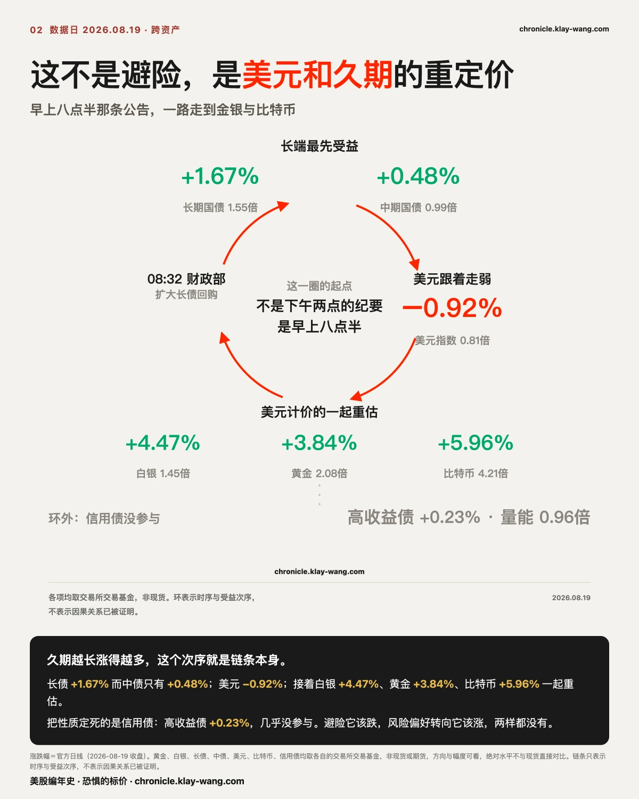
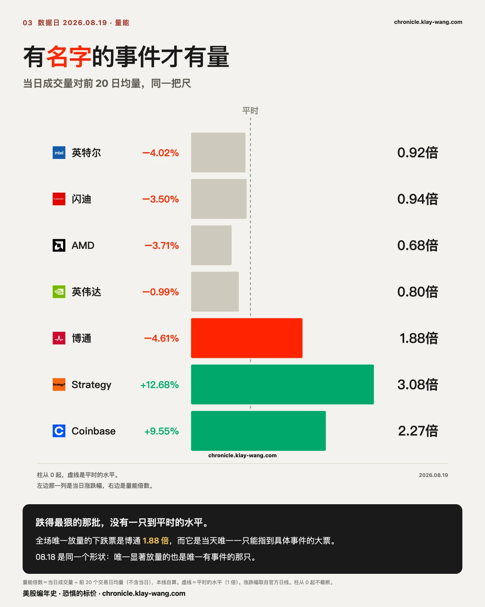
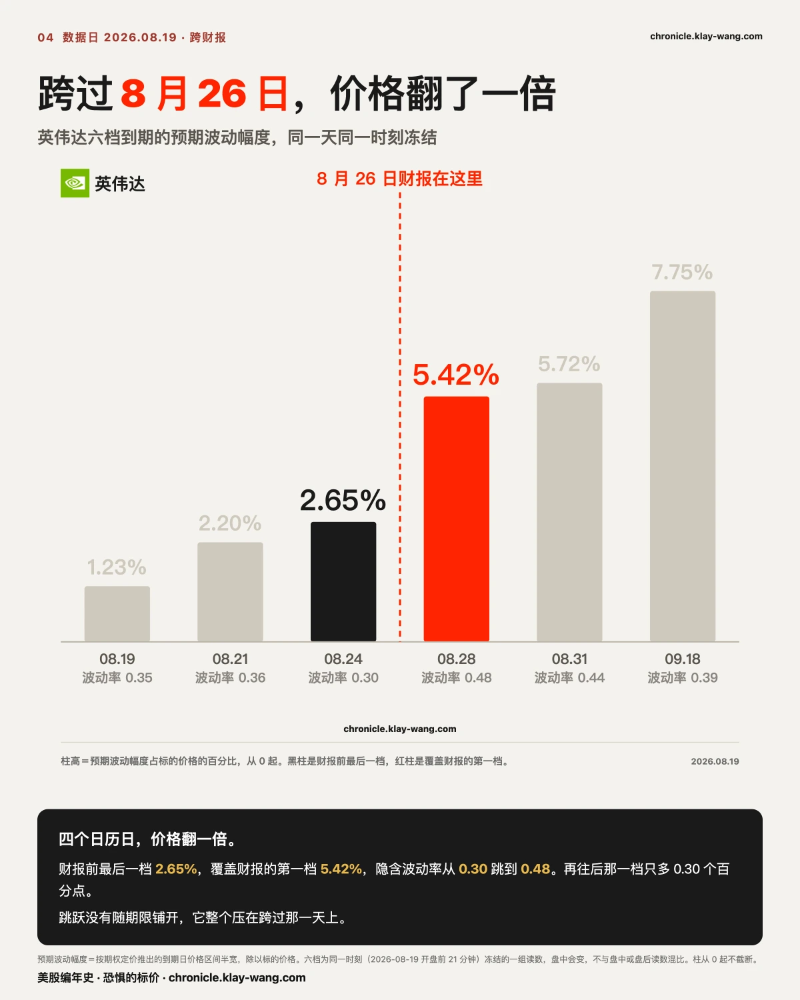
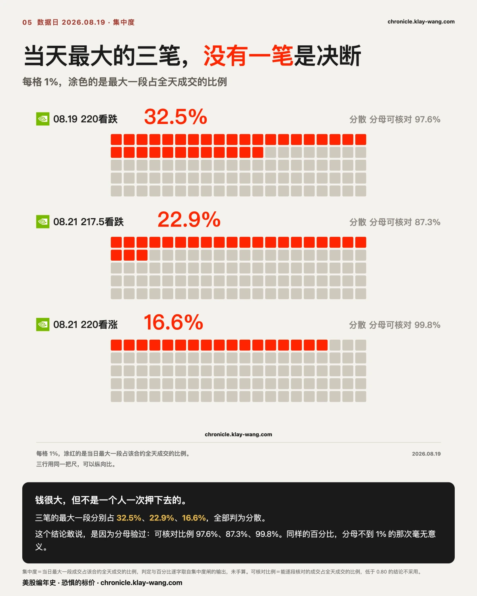
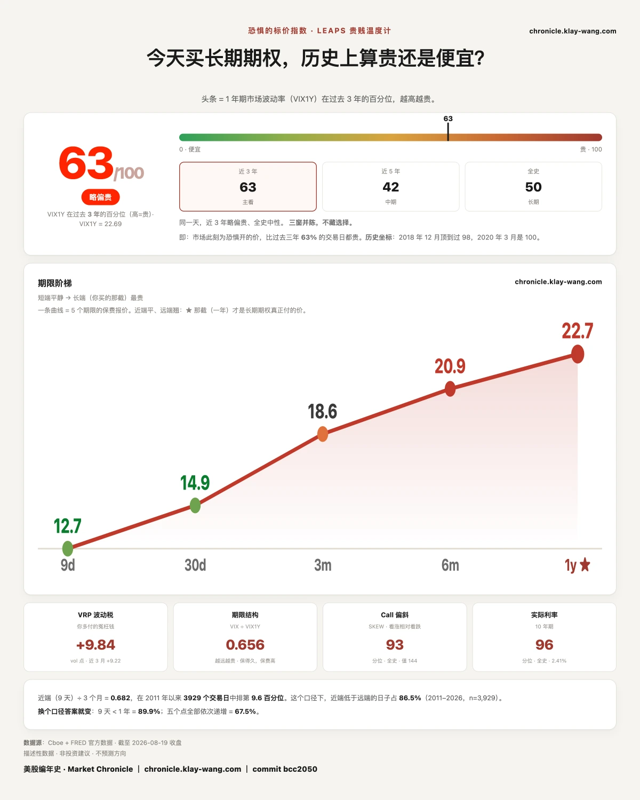

不要慌，今天只是接盘的人先走开了 · 8.17-8.21
这一期讲什么
今天的通稿有两条主线：七月会议纪要偏鹰，三名投票委员主张加息；半导体被抛售，博通跌 4.61%。两条都是真的。但把它们叠起来得出的那个结论，今天是避险的一天，我们认为是错的。
避险的样子是有人卖。今天跌得最狠的四只，成交量全部低于平时，最低的只有 0.68 倍。没有人在卖。 而同一天，期权那一侧在做完全相反的事：微软九档看涨押上约 1.15 亿美元，指数在九月两个到期日上新开仓，最极端的一档成交量是持仓量的 59.7 倍。
所以今天不是钱在撤出，是价格在一个没人接的盘口上自己滑下去，同时另一批钱在给九月的几个具体日子付钱。 这两件事同时成立，才是今天真正的样子；只讲其中一件，都会得出反的结论。

〔纪要〕给今天定价的是财政部，不是联储
我们的读法是：这份纪要对今天的价格几乎没有贡献。当天的方向在它发布之前五个半小时就定完了。
早上 8 点 32 分，财政部宣布把长期国债的回购规模至少翻倍。纪要下午 2 点才发。中间这五个半小时里，30 年期收益率跌了 8 个基点，美元创下 11 周新低，涨得最猛的五只全是最受长端下行和美元走弱好处的那一类。
回购扩容这类事通常被归进技术性流动性管理，被认为不该影响风险资产的方向。我们认为今天是对这个说法一次很干净的反证：它对当天价格的影响，比一份三票主张加息的纪要大得多。
纪要本身九比三维持不变。该看的不是三比九这个票数，是这三票落在哪儿。 三张全部来自地区联储主席，理事会成员一个都没有加入。地区主席投反对票是常态，理事投反对票才罕见；理事会才是政策的重心，而重心今天一票都没丢。所以这是边缘在鹰、中枢没动，把它读成联储整体转鹰，是读过头了。
纪要里还有一件几乎没人提的事，我们认为它比那三张反对票更重要：主席提出把每年的议息会议从 8 次减到 6 次，理由是让更多信息在两次会议之间累积，委员会没有结论。减少会议就是减少政策的可交易时点。而钱不会因此消失，它只会往剩下的日子上堆。 接下来两节各是这句话的一个实例。
〔跨资产〕四个市场今天给出同一个答案，而那个答案跟纪要相反
判断股票市场当天在想什么，只看股票是不够的。今天把债、汇、金、加密摆在一起，会看到一条很干净的链，而这条链的起点是早上八点半那条公告，不是下午两点那份纪要。
链条是这样走的：财政部宣布把长期国债的回购规模翻倍，受益最直接的是久期最长的那一端。当天长期国债基金涨 1.67%，而中期那只只涨 0.48%，久期越长涨得越多，这个次序本身就说明它是被那条公告推动的，不是被风险偏好推动的。 接着是美元指数基金跌 0.92%。美元一走弱，所有用美元标价的东西一起重估：白银涨 4.47%，黄金涨 3.84%，比特币基金涨 5.96%，而且三个都放量，黄金 2.08 倍、比特币 4.21 倍。
黄金和比特币同一天大涨，通常被当成矛盾，一个是避险一个是风险资产。今天它们不矛盾，因为它们共用同一个分母：美元和长端利率同时走低。这时候它们不是两笔相反的交易，是同一笔交易的两种表达。
真正把今天的性质定死的是信用债，因为它什么都没做。 高收益债只涨 0.23%、量能 0.96 倍，投资级债涨 0.69%。如果今天是避险，信用利差会走阔、高收益债该跌；如果是风险偏好大幅上升，它该明显涨。两件事都没发生。信用市场当天几乎没参与。
所以今天不是避险，也不是风险偏好转向，而是一次由美元和久期驱动的重定价。 股票那一侧涨得最猛的五只全是加密与高贝塔，跌的是半导体，而半导体有自己的名字，它不在这条链上。 把半导体的跌算进避险叙事，就是把一条美元链和一条公司新闻混成了一件事。
口径说明：黄金、白银、长债、美元、比特币这几项用的是各自的交易所交易基金，不是现货或期货，方向与幅度可以看，绝对水平不要与现货直接对比。

〔量能〕今天不是有人在卖，是没人在接
这两件事在走势图上长得一样，留下的痕迹完全不同：抛售会留下成交量，没人接不会。今天属于后者。
跌得最狠的四只成交量全部低于平时，最低 0.68 倍，而它们跌了 3% 到 4%。一笔卖出要成交，必须有人在另一边接。量没放大，就说明卖的力度并不比平时大，真正少掉的是买的那一边。价格是在很薄的盘口上滑下去的，不是被砸下去的。
全场唯一放量的下跌票是博通 1.88 倍，而它也是今天唯一一只能指到具体事件的大票。 08 月 18 日是一模一样的形状：唯一显著放量的是 Meta，也是那天唯一有事件的票。连着两天同一个形状，这就不再是巧合，而是一条可以直接拿去用的判据：想知道谁在真的动，先看谁放量，别看谁跌得多。
由此还能推翻今天的一个说法：半导体的跌有自己的名字，与联储无关。把它算进避险叙事，是把两件事混成一件。 今天真正做了决定的钱在涨的那一端和博通身上，不在跌的那一片里。

〔异动〕全场最不起眼的那只票，藏着今天最集中的一笔意见
涨跌幅是结果，它不带成本；期权是有成本的意见。今天这两把尺给出的排序完全不同，而我们更看重后者。
微软全天只涨 0.56%，是七巨头里最平淡的一只。但收盘时它身上有九档期权全部落在同一个到期日、全部是看涨，合计约 1.15 亿美元。 到期日都是 8 月 28 日，距今 9 个交易日，最大的一档是 415 行权价的 3744 万。
九档里有八档的成交量是持仓量的 2 到 3 倍，这个比例排除了一种可能：它们不是老仓换手，是新开的。 换句话说，今天有人为微软的一个具体日期新掏了九位数。
对照英伟达能看出这组的特别之处：英伟达当天四十七档合计约 2.10 亿，比微软大，但分散在多个到期日、两个方向上。微软这九档压在一个日期、一个方向。规模不是它的看点，集中度才是。
我们不知道是谁买的，成交记录也不显示对面是谁，这两件事我们不猜。但一个日期、一个方向、九个价位、九位数金额同时成立时，它比那 0.56% 的涨幅更值得你记住。
〔异动〕指数那几笔看跌不是在赌崩盘，是买了一段有边界的下跌
看到指数看跌期权放量三万张，最常见的解读是有人在赌大跌。今天这两组不是，而且成交量本身就把答案写出来了。
纳指基金 9 月 11 日到期的两档看跌：贴近现价那档（离现价 −1.6%）成交 33448 张，更低那档（−5.1%）成交 33349 张，两档只差 99 张，相差 0.3%。标普基金同一个到期日：−1.2% 那档成交 33945 张，−3.8% 那档 33753 张，差 192 张，0.6%。
两档同到期、同方向、成交量近乎相等，这是价差的指纹。 单独押方向不需要在下面再挂一档同样大小的；而买一档、卖更低一档，付出去的钱被压低，赔付也被封在两个行权价之间。换句话说，买这个结构的人不是在赌崩盘。真赌崩盘的人不会把下方那一档卖掉，那等于自断赔付。他买的是一段有上下边界的下跌。
更值得记的是两只指数基金做了同一件事：纳指那组把边界画在 −1.6% 到 −5.1%，标普那组画在 −1.2% 到 −3.8%，到期日都是 9 月 11 日。同一天、同一个到期、同一种结构、几乎同一段幅度。
另一档要单独说：纳指 9 月 18 日贴现价的看涨，成交是持仓的 59.7 倍，但它没有配对的第二档，是单腿。它和上面那两组不是一回事，别混着读。
所以今天指数这一侧的正确说法不是多空分歧加大，而是：有人为九月中旬那两个日子付了钱，且付钱的方式是给下跌划一个区间，不是押它无限跌。 这个读法可以被推翻，条件写在文末对账区。
〔期权〕市场买的不是波动率，是 8 月 26 日那一天
今天真正被定价的不是联储，是英伟达的一天。而且买法本身说明了性质。
英伟达 8 月 26 日盘后发财报。开盘前 21 分钟冻结的一组读数：8 月 24 日到期这一档，也就是财报前最后一档，预期波动幅度 ±5.81 美元、占股价 2.65%，隐含波动率 0.30；8 月 28 日到期这一档，覆盖财报的第一档，预期波动幅度 ±11.92 美元、占股价 5.42%，隐含波动率 0.48。两档之间只隔 4 个日历日，价格翻了一倍。
如果市场担心的是这段时间会晃，涨价应该随期限均匀铺开。它没有。 8 月 31 日那一档只比 8 月 28 日多 0.30 个百分点，跳跃整个压在跨过 8 月 26 日那一天上。这说明买的人要的不是一段波动，是一个日期。
反过来更有意思：财报前最后一档只有 2.65%，也就是说在财报之前的那五个交易日，市场几乎不担心。担心是有边界的，边界就是那一天。
联储开了一整天的会、发了一份纪要，没有让任何一档指数期权变贵；一家公司的一个具体日期，让期权价格翻了一倍。我们的判断是：这种把价格集中到单日的结构，比任何一次宏观会议都更能解释今天的期权价格，而且它是这两年最稳定的一个变化。

〔集中度〕钱很大，但没有一笔是有人下了决心
大金额经常被当成有人下了重注。今天最大的三笔证明这个推断不成立。
今天金额最大的三笔英伟达合约，最大的一笔 2480 万美元，收盘后逐笔核过之后，三笔的最大一段分别只占全天成交的 32.5%、22.9%、16.6%。三笔全部判为分散，意思是这些钱是很多笔凑出来的，不是一个人一次押下去的。
这个结论敢说出口，靠的不是那三个百分比，是分母。 三笔能逐段核对的成交分别占全天的 97.6%、87.3%、99.8%。作为对照，8 月 6 日有一笔的这个比例只有 0.11%，那次同样算出了低集中度，但那个数字毫无意义，因为它只看到了千分之一的成交。
所以这一节真正的用处不在今天这三笔，在那把尺：以后再看到集中度低这四个字，先问它看到了几成成交。

〔大盘 · 恐惧的标价〕措辞不要钱，保险要钱
在一份三票主张加息的纪要发布当天，为未来一年买保险的价格降了。这两件事只能有一个是当天市场的真实态度，我们更信后者，因为它是有人付钱付出来的。
今天读数 63.4，08 月 18 日是 68.4。一年期的波动率报价从 22.94 落到 22.69。五档从近到远是 12.66、14.89、18.57、20.90、22.69，全线下移，仍然是完整的向上斜坡。
注意是五档一起下移，不是只有近端下移。如果只有近端便宜，那可以解释成短期情绪松了一天；五档一起降，说明松的是整条曲线的定价。 这跟纪要给出的方向正好相反。
所以今天这份纪要在市场这里的定价是：措辞归措辞，没人为它多付一分钱的保险费。

〔对账〕昨天的账，和今天该记下的两处
博通那道期限倒挂，从 1.44 收敛到 1.13。 08 月 18 日挂的问题是 1.44 之后还能不能继续走宽，答案是不能，六个交易日的走宽到此结束。序列是 0.29、0.30、0.78、0.85、1.38、1.44、1.13。但另一半仍然成立：19 只票里还是只有博通一只倒挂，排第二的英伟达是 −1.92，离零还很远。
08 月 18 日那批缩量下跌，今天没有转成放量。 当时写下的推翻条件是同样跌幅配 1.5 倍以上的量能，今天跌的这批全部在 1 倍以下。判断成立，但要补一句当时没说到的：放量的是涨的那一端。
波动率期货今天换月，明天的读数会跳，那不是行情。 今天是 8 月合约的到期日，今天前月读数 15.29，下一张 17.61。明天起前月读数会自动变成 17.61 那一档，一夜之间跳高 2.32 个点，而市场可以什么都没发生。这是换月的机械结果。顺带说清：这次换月不影响恐惧的标价那条曲线，那条曲线用的是固定期限的报价，不吃任何一张具体合约。
今天我们自己的数据被抓到一处不准，照实记。 抽查 SpaceX 11 月 20 日到期的 235 看涨时，成交量在两个源之间吻合（2149 与 2148），但持仓量差了 59.1%（261 与 164）。这一差把该合约的成交对持仓比从 13.1 倍降到 8.2 倍，结论强度跟着降。这条今天没有进正文的任何一个判断，就是因为它先被查出来了。
今天几个判断的推翻条件，一并写在这里，下一期回来认：指数那两组看跌如果明天两条腿的持仓量同步上升相近的数量，价差这个读法坐实；如果只有贴价那一档的持仓涨、更低那档没动，说明两档只是碰巧成交量接近，本期把它们读成一个结构就是错的，回来认。微软那九档如果在 8 月 28 日到期前成交量掉回持仓量以下，说明那不是新建仓而是当天的来回，本期那句最集中的下注就要收回；指数那两个到期日如果明后天不再出现同量级的新开仓，说明今天只是单日形状；今天涨的这批高贝塔如果明天全数回吐，那么把它们归因于长端利率下行这条就站不住。
今天值得带走的三句话
跌得最狠的四只票成交量全部低于平时，最低只有 0.68 倍。没人在卖，是没人在接。
微软全天只涨 0.56%，而收盘时它有九档期权压在同一个到期日、同一个方向上，合计约 1.15 亿美元。
联储开了一整天会，没让任何一档指数期权变贵。而一家公司的一个具体日期，让期权价格翻了一倍。
预告与下一期回访
下一期回来对四件事：微软那九档是留下还是当天来回；纳指与标普在九月那两个到期日上的新开仓是不是只有一天；博通那道倒挂从 1.13 继续收敛还是重新走宽；以及明天前月波动率读数跳到 17.61 附近之后，有没有人把它当成行情来读。
期权页每个交易日更新，昨天的钱今天还在不在，那一章可以逐日翻。
恐惧的标价指数（Fear-Price Index）· 2026-08-19 · 读数 63/100：一年期波动率 VIX1Y 为 22.69，处于近三年第 63 百分位，高即贵。逐日台账与口径 → chronicle.klay-wang.com · 转载注明：恐惧的标价指数 · Market Chronicle
本站不提供投资建议，不预测方向，不做择时。